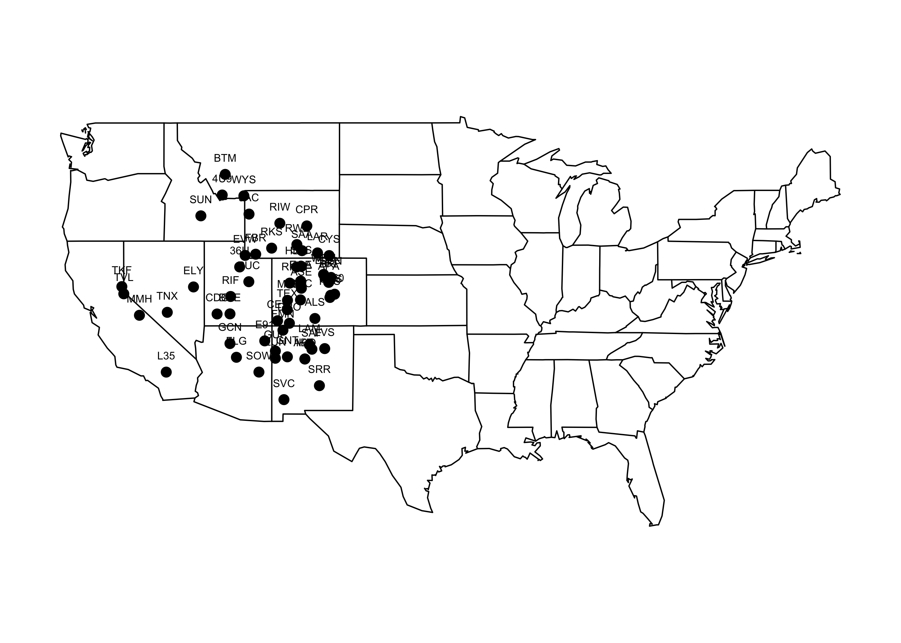
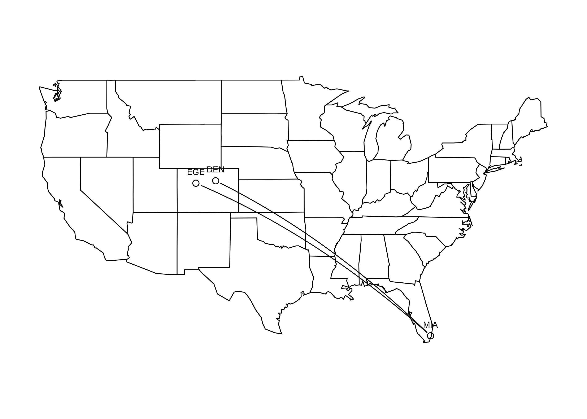
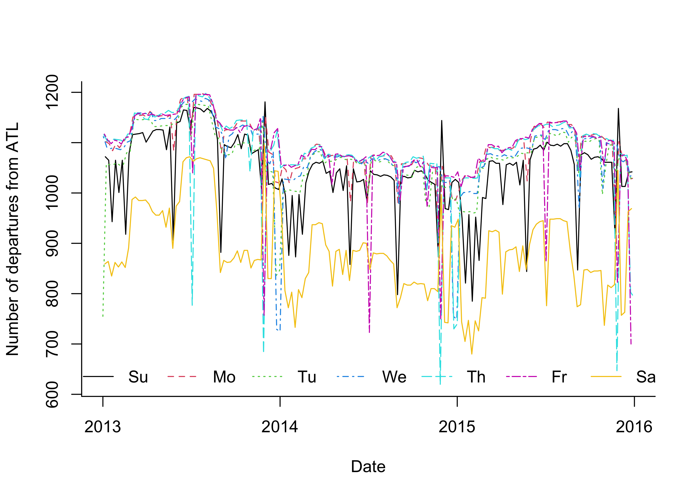
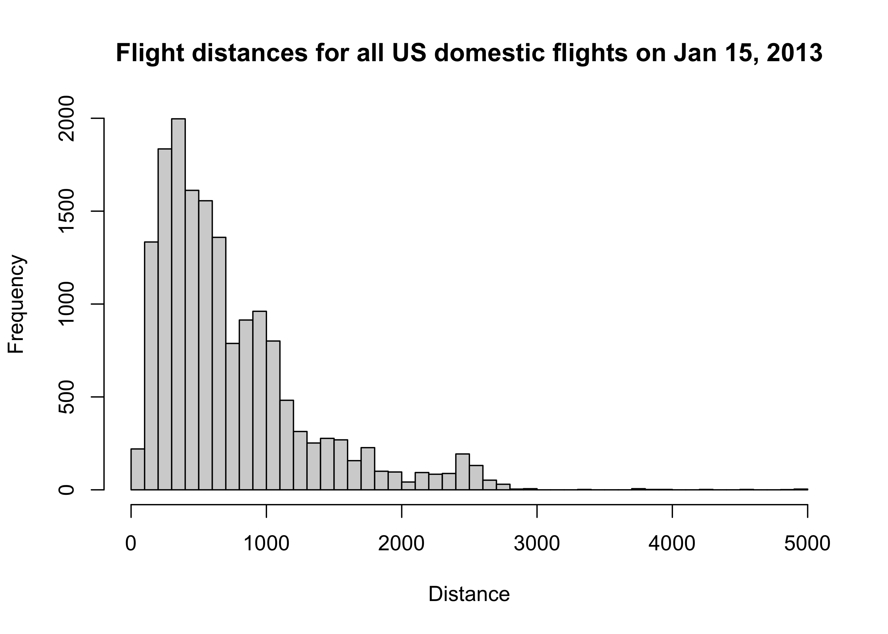

library(mdsr)
db <- dbConnect_scidb("airlines") SQL in R
$$
$$
Now that we know how to make some simple SQL queries, we consider how to import SQL-retrieved data into R so that we can make plot or do statistical analyses of the data. In this page we’ll learn how to store the results of SQL queries in R data frames.
Let’s continue working with the airlines database, accessible via the mdsr package:
One way to store the result of an SQL queries in an R data frame is by using the R package DBI.
library(DBI) # first time run install.packages("DBI")This package has the function dbGetQuery(), which returns a data frame from an SQL query. Here is an example of how it is used:
query <- "
SELECT faa, alt, lat, lon
FROM airports
WHERE alt > 5280
"
hap <- dbGetQuery(db, query)
head(hap) faa alt lat lon
1 36U 5637 40.48181 -111.4288
2 4U9 6007 44.73575 -112.7200
3 A50 6145 38.87000 -104.4100
4 ABQ 5355 35.04022 -106.6092
5 ALS 7539 37.43500 -105.8667
6 APA 5883 39.57013 -104.8493So we need to provide two arguments to the dbGetQuery() function: First, the database, and second, a text string containing a valid SQL query. The function executes the query and returns the result as an R data frame.
Make some maps
Now we can use the retrieved data in R: The code below makes a map of the United States of America using the R package maps and places dots at the locations of these airports.
library(maps) # first time run install.packages("maps")
map('state')
points(x = hap$lon, y = hap$lat, pch = 19)
text(x = hap$lon, y = hap$lat, labels = hap$faa, cex = .5, pos = 3)
Now let’s find mile-high airports from which a flight to Miami (MIA) departed during 2013, keeping their longitude and latitude coordinates.
query <- "
SELECT f.origin, f.dest, a.alt, COUNT(*) numFlights, a.lon, a.lat
FROM flights AS f
JOIN airports AS a ON f.origin = a.faa
WHERE a.alt > 5280 AND f.year = '2013' AND f.dest = 'MIA'
GROUP BY f.origin
"
tomiami <- dbGetQuery(db,query)
tomiami origin dest alt numFlights lon lat
1 DEN MIA 5431 747 -104.6732 39.86166
2 EGE MIA 6540 104 -106.9177 39.64256Note, if we want a data frame in R to print nicely in a markdown document, we can use the kable() function from the R package knitr, as follows:
library(knitr)
kable(tomiami[,-c(3,5,6)],
col.names = c("Origin","Destination","Number of flights in 2013"))| Origin | Destination | Number of flights in 2013 |
|---|---|---|
| DEN | MIA | 747 |
| EGE | MIA | 104 |
Let’s get the longitude and latitude of the Miami airport too:
query <- "
SELECT faa, lon, lat
FROM airports
WHERE faa = 'MIA'
"
miami <- dbGetQuery(db,query)
miami faa lon lat
1 MIA -80.29056 25.79325The code below makes a plot showing possible flight paths from the mile-high airports to the MIA airport. The code makes use of a function in the R package geosphere for computing the coordinates of a geodesic (shortest line between two points on a sphere) between these airports and MIA.
map('state')
points(x = tomiami$lon, y = tomiami$lat)
points(x = miami$lon, y = miami$lat)
text(x = tomiami$lon,
y = tomiami$lat,
labels = tomiami$origin,
pos = 3,
cex = .6)
text(x = miami$lon,
y = miami$lat,
labels = miami$faa,
pos = 3,
cex = .6)
library(geosphere) # gcIntermediate computes the geodesic between two (lon,lat) coordinates
geo1 <- gcIntermediate(p1 = c(tomiami$lon[1],tomiami$lat[1]),
p2 = c(miami$lon,miami$lat))
geo2 <- gcIntermediate(p1 = c(tomiami$lon[2],tomiami$lat[2]),
p2 = c(miami$lon,miami$lat))
lines(geo1)
lines(geo2)
Plot number of departures over time
Below we obtain the number of departures from ATL every day:
query = "
SELECT origin, COUNT(*) AS numDepartures, STR_TO_DATE(CONCAT(year,'/', month,'/', day),'%Y/%m/%d') AS theDate
FROM flights
WHERE origin = 'ATL'
GROUP BY year, month, day
"
dep <- dbGetQuery(db, query)Now we plot, for each weekday, the number of departures over 2013 – 2015:
wkdays <- c("Sunday","Monday","Tuesday","Wednesday","Thursday","Friday","Saturday")
wkdays_dep <- weekdays(dep$theDate)
plot(numDepartures ~ theDate,
data = dep,
pch = NA,
bty = "l",
ylab = "Number of departures from ATL",
xlab = "Date") # make empty plot
for(j in 1:7){
ind <- which(wkdays_dep == wkdays[j])
lines(numDepartures ~ theDate, data = dep[ind,], col = j, lty = j)
}
legend("bottom",
legend = c("Su","Mo","Tu","We","Th","Fr","Sa"),
lty = 1:7,
col = 1:7,
horiz = T,
bty = "n")
query <- "
SELECT distance
FROM flights
WHERE year = 2013 AND month = 1 AND day = 15
"
dist <- dbGetQuery(db,query)hist(dist$distance,
breaks = 50,
main = 'Flight distances for all US domestic flights on Jan 15, 2013',
xlab = 'Distance')
Let’s find out the origins and destination of these really long flights:
query <- "
SELECT f.distance, o.name AS origin, d.name AS destination
FROM flights as f
JOIN airports as o ON f.origin = o.faa
JOIN airports as d ON f.dest = d.faa
WHERE f.year = 2013 AND f.month = 1 AND f.day = 15 AND f.distance >= 3000
"
longflights <- dbGetQuery(db,query)kable(longflights)| distance | origin | destination |
|---|---|---|
| 4983 | John F Kennedy Intl | Honolulu Intl |
| 3904 | George Bush Intercontinental | Honolulu Intl |
| 4243 | Chicago Ohare Intl | Honolulu Intl |
| 4502 | Hartsfield Jackson Atlanta Intl | Honolulu Intl |
| 3784 | Dallas Fort Worth Intl | Honolulu Intl |
| 3711 | Dallas Fort Worth Intl | Kahului |
| 3365 | Denver Intl | Honolulu Intl |
| 3784 | Dallas Fort Worth Intl | Honolulu Intl |
| 4817 | Washington Dulles Intl | Honolulu Intl |
| 4963 | Newark Liberty Intl | Honolulu Intl |
| 4983 | Honolulu Intl | John F Kennedy Intl |
| 4502 | Honolulu Intl | Hartsfield Jackson Atlanta Intl |
| 3784 | Honolulu Intl | Dallas Fort Worth Intl |
| 3711 | Kahului | Dallas Fort Worth Intl |
| 3784 | Honolulu Intl | Dallas Fort Worth Intl |
| 4243 | Honolulu Intl | Chicago Ohare Intl |
| 3904 | Honolulu Intl | George Bush Intercontinental |
| 4963 | Honolulu Intl | Newark Liberty Intl |
| 3365 | Honolulu Intl | Denver Intl |